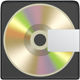

<h1>COORTE : Une trousse d’outils pour mettre en pratique une proposition de réforme de l’orthographe française</h1>
				
<figure class="row">
	<a href="https://doi.org/10.1051/shsconf/202419111002" class="icon">
		
		<figcaption>DOI</figcaption>
	</a>
	<a href="https://hal.science/hal-04579389" class="icon">
		
		<figcaption>HAL</figcaption>
	</a>
	<a href="PDF.pdf" class="icon">
		
		<figcaption>PDF</figcaption>
	</a>
	<a href="slides.zip" class="icon">
		
		<figcaption>Slides</figcaption>
	</a>
	<a href="https://gitlab.com/erofa/coorte" class="icon">
		
		<figcaption>Program</figcaption>
	</a>
</figure>